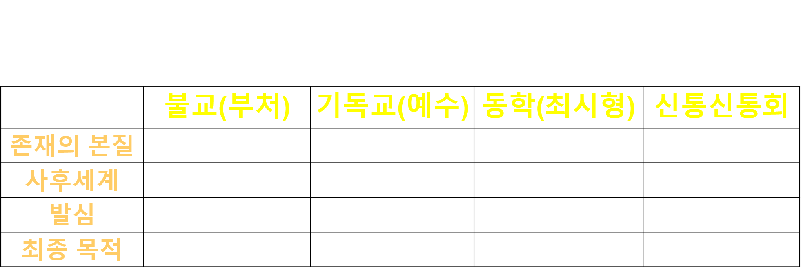

선언 이후, 기존 종교권력이 역사 속에서 형성한 구조적 문제를
10가지 항목으로 정리하였다.
이는 감정적 비판이 아니라, 철학적 정의와 역사적 검토를 거쳐 도출된 구조 분석으로 제시된다.
정리의 목적
논점의 분산을 줄이고, 주장·근거·검토 기준을 항목화하여 공개적으로 검토 가능한 형태로 제시한다.
정리의 성격
개별 종파의 감정적 평가보다, 제도화 과정에서 나타난 공통 구조를 중심으로 기록한다.
4. 성현 가르침의 공통 구조 (도표)

위 도표는 세 성현의 핵심 가르침을 구조적으로 정리한 것이다.
표현과 상징은 달랐으나, 존재의 본질이 인간 내부에 내재한다는 점,
현세 구현을 지향한다는 점, 각성을 목표로 한다는 점에서 공통 구조가 확인된다.
책임 정리는 이 공통 구조가 제도화 과정에서 어떻게 변형되었는지를 검토한 결과로 제시된다.
5. 10가지 책임 정리 (요약)
아래 항목은 책임 정리의 요약 기록이다.
각 항목은 핵심 논지를 2~3줄로 정리했으며,
상세 전개는 관련 회차(특히 제23회)에서 종합된다.
1성현 가르침 변형의 문제
성현의 언어는 제도화 과정에서 축소·재해석되었으며,
본래의 의미와 다른 방향으로 고정되는 구조가 형성되었다.
2내재적 신성의 외주화
인간 내부의 신성은 초월적 권력으로 이전되었고,
중개 구조가 강화되며 인간의 각성 가능성이 약화되었다.
3사후 공포의 제도화
지옥과 심판 개념은 각성을 돕는 비유를 넘어
신앙을 유지·통제하는 장치로 작동하는 방향으로 사용되었다.
4현세 구현의 유예
현실에서 구현되어야 할 비전이
사후세계로 이연되면서 현세의 변형과 책임이 약화되는 구조가 나타났다.
5사랑의 구조 변화
사랑·자비·공경의 자발적 확장이
복종과 충성의 구조로 재구성되는 경향이 강화되었다.
6사유 이전의 믿음 형성
비판적 검토 이전에 교리가 주입되고,
신념의 세습 구조가 고착되는 방식이 반복되었다.
7교리 절대화
가르침이 ‘길’로 제안되기보다
법전처럼 봉인되며 인간의 고통과 현실이 부차화되는 구조가 나타났다.
8권력과의 결합
종교가 정치·경제 권력과 결합하여
상호 강화 구조를 형성하는 과정에서 진리 검증의 자리가 약화되었다.
9침묵의 구조
사회적 폭력과 차별 앞에서
종교가 비판적 역할을 수행하지 못하거나 침묵하는 사례가 누적되었다.
10자기조정 실패
제도가 스스로를 조정하거나 내려놓는 방향으로
충분히 나아가지 못하면서 원래의 자리로의 복귀가 지연되는 구조가 반복되었다.